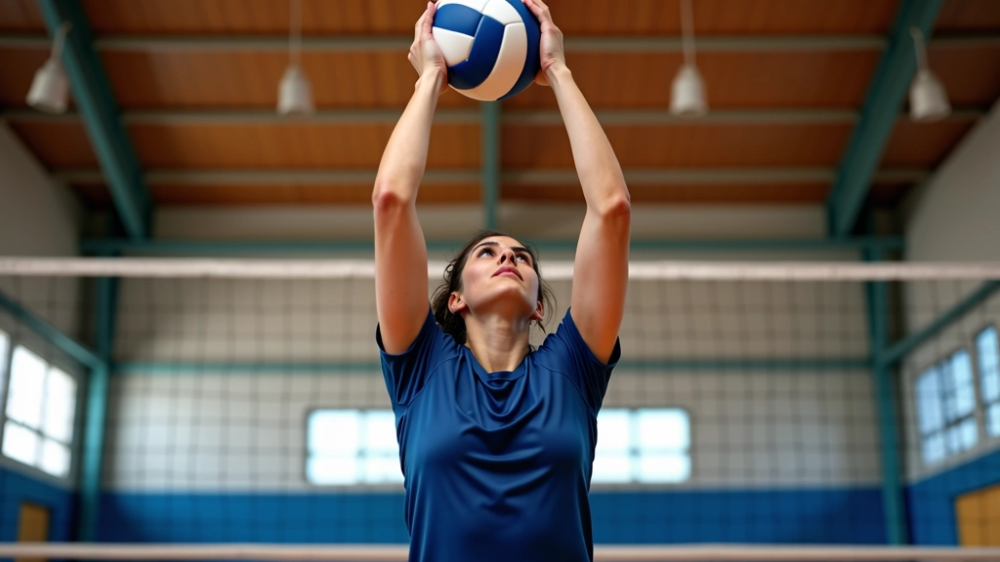
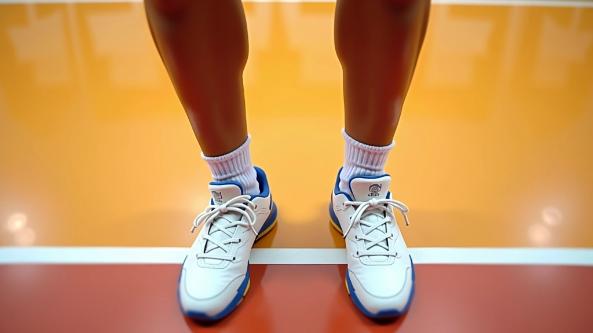
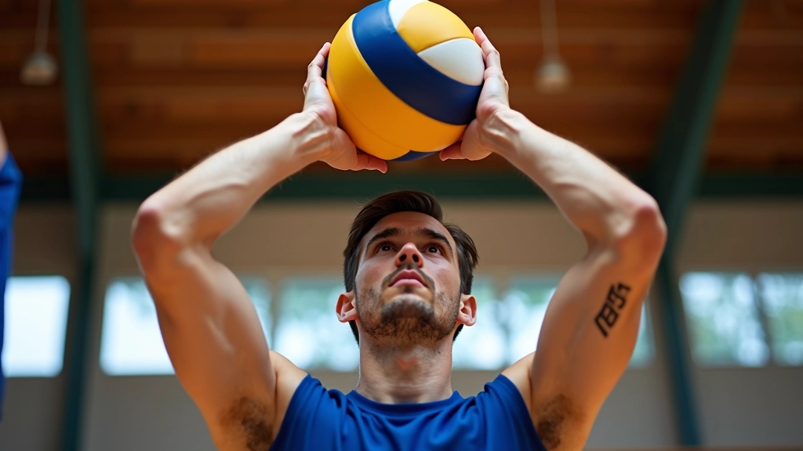
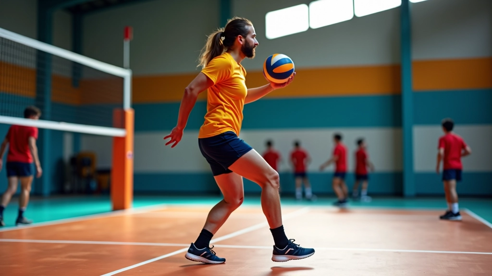

تصحيح الأخطاء الشائعة في التمرير
تعرف على الأخطاء الشائعة التي يرتكبها المبتدئون وكيفية تصحيحها بشكل صحيح.
تعلم وضعية الجسم الصحيحة وحركة اليدين والقدمين التي تشكل أساس التمرير العلوي الفعال

التمرير العلوي ليس مجرد حركة عشوائية. إنها مهارة تُبنى على أساس متين من الوضعية الصحيحة والحركات المنسقة. عندما تتعلم الأساسيات بشكل صحيح من البداية، كل شيء بعدها يصير أسهل بكثير.
الحقيقة أن معظم الأخطاء التي نراها في التمرير العلوي — سواء التمرير الضعيف أو غير الدقيق — مصدرها واحد من ثلاثة أشياء: وضعية جسم سيئة، أو موضع يدين غير صحيح، أو حركة قدمين عشوائية. نحن سنركز على كل واحد منهم.

تبدأ كل حركة تمرير جيدة من الأرض. قدماك هي أساس كل شيء آخر. يجب أن تكونا متباعدتان بمسافة عرض أكتافك تقريباً، والوزن موزع بالتساوي على كلا القدمين. ركبتاك يجب أن تكونا مثنيتين قليلاً — ليس كثير، لكن بزاوية 15-20 درجة تقريباً.
جسمك يجب أن يكون منتصباً لكن متوازناً. لا تميل للأمام ولا للخلف. خط مستقيم من رأسك إلى قدميك — هذا ما نبحث عنه. الكتفان يجب أن يكونا مسترخيان وللخلف قليلاً.
النقطة الأساسية: إذا وقفت بالوضعية الصحيحة، يجب أن تشعر أنك مستعد للقفز للأمام أو الخلف أو الجانب بسرعة. هذا هو الاختبار الحقيقي.


يديك هي أهم جزء في هذه المهارة. يجب أن تكونا أعلى من رأسك بقليل — على ارتفاع حوالي 15-20 سم. الأصابع تنشر بشكل طبيعي، ليست مشدودة جداً ولا مرتخية. الإبهامان يشيران للأمام قليلاً.
الجزء الحساس هنا: الكرة تلمس أصابعك وليس راحة اليد. الكثيرين يحاولون التمرير براحة اليد — هذا خطأ شائع جداً. استخدم أصابعك. الكرة يجب أن تلمس أصابع اليد من السبابة للإصبع الصغير بشكل متساوٍ تقريباً.
عندما تستقبل الكرة، يديك ينحنيان قليلاً — كأنك تمتص طاقة الكرة. ثم تبسطين بسرعة للأمام والأعلى لإرسال الكرة. الحركة تحتاج تناسق بين المعصمين والأصابع والمرفقين.
الكثيرين ينسون أن التمرير العلوي يتطلب حركة قدمين جيدة. لا تبقى ثابتاً في مكان واحد. بعد أن تحصل على الكرة، خطواتك تجب أن تكون سريعة وصغيرة — ما يسمى "خطوات التوازن". هذه الخطوات تساعدك تصل للموضع الصحيح بسرعة.
الخطوة النموذجية: خطوة صغيرة بقدمك اليمنى، ثم خطوة صغيرة بقدمك اليسرى. سرعة الخطوات تعتمد على سرعة الكرة القادمة. إذا الكرة بطيئة، خطواتك تكون أبطأ. إذا الكرة سريعة، خطواتك تكون أسرع. البقاء متوازناً هو الهدف — ليس التحرك بسرعة جنونية.
نصيحة عملية
تدرب على الوقوف في مكانك أولاً. تعلم الوضعية والأصابع والحركات بدون الحاجة للتحرك. بعدها، أضف خطوات توازن صغيرة. تدريج الأشياء يساعدك تتقن كل جزء.

نتائج التعلم والتحسن تختلف من شخص لآخر. هذه الأساسيات صُممت لتكون نقطة بداية قوية. بعض الناس يتقنون هذه الحركات في أسبوعين، وآخرون يحتاجون وقت أطول. الاستمرار والتدريب المنتظم هما المفتاح الحقيقي.
الأساسيات الثلاثة التي شرحناها — الوضعية، موضع اليدين، وحركة القدمين — ستشكل أساس قوي لكل شيء تتعلمه بعدها. لا تتسرع في الانتقال للحركات المعقدة قبل أن تتقن هذه الثلاثة.
ابدأ بالتدريب اليوم. قف بالوضعية الصحيحة. شيل يديك فوق رأسك. تحرك بخطوات توازن صغيرة. كرر هذا مئات المرات. هذا هو طريق التحسن الحقيقي.

فريق التحرير والمراجعة
كتب بواسطة فريق القمة الرياضية للتدريب المتقدم، متخصصون في تقديم محتوى تدريبي دقيق وسهل التطبيق.
تعرف على الأخطاء الشائعة التي يرتكبها المبتدئون وكيفية تصحيحها بشكل صحيح.

انتقل للمستوى التالي وتعلم الحركات والتقنيات المتقدمة في التمرير العلوي.

تمارين مثبتة وفعالة لتحسين مهارات التمرير العلوي والتطبيق العملي.